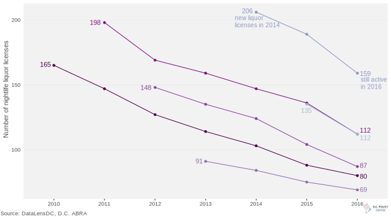
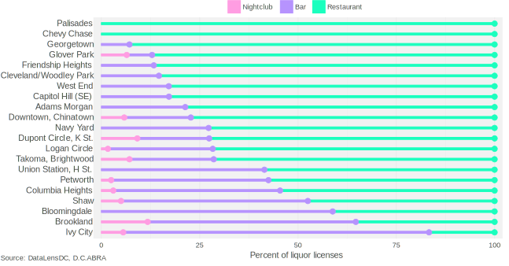

Mapping D.C. Nightlife, 2008-2016
Liquor license locations for bars, restaurants, and clubs
Nightlife in:
First year of liquor license
pre-2009
2012
2016
Source: ABRA, DataLensDC
Nightlife in D.C. has grown dramatically in recent years, from just over 800 bars, restaurants, and nightclubs in 2008 to just under 1,300 in 2016. While the conventional wisdom that most restaurants don’t survive their first year is far from true, nightlife in D.C. hasn’t been all boom—even in this period of rapid growth there were many short-lived bars, restaurants, and nightclubs.
The chart below tracks how many new liquor licenses were created for each from 2010 to 2015 and how many liquor licenses remained active in the following years. In 2010, for instance, there were 165 new liquor licenses granted to restaurants, bars, and nightclubs; by 2016, just under half of those same businesses remained.
Roughly ten percent of nightlife doesn't survive for each year of business
Number of new D.C. liquor licenses, 2010-15, and their survival rates

Roughly 10 percent of bars, restaurants, and nightclubs exit each business year, but openings and survival rates seem highly cyclical...Read on...
D.C.’s nightlife boom since 2008 has increased the number of liquor licenses for bars, restaurants, and nightclubs by nearly 50 percent. But it hasn’t been an even gain across each category. From 2008 to 2016, the number of liquor licenses for bars increased 77 percent, and restaurants grew 37 percent—but the number of nightclubs actually fell by 8 percent. This brought the overall proportion of D.C. nightlife to 25 percent bars, 71 percent restaurants, and 4 percent nightclubs.
Each liquor license type has different restrictions, and is meant to provide a different experience for customers. Restaurants must have a kitchen that stays open until two hours before closing, gross food sales in excess of $2,000 per occupant or 45 percent of gross annual receipts, and are not allowed to have dancing or covers; entertainment is allowed only with additional approval. Bars—or taverns as D.C.’s Alcoholic Beverage Regulation Administration (ABRA) refers to them—do not have to serve food and can have a dance floor as long as it’s under 140 square feet. Nightclubs face few restrictions; they may charge cover and have entertainment and dancing without first receiving additional permits.
The mix of restaurants, bars, and nightclubs vary drastically across neighborhoods in D.C., as shown below. Read on...
Restaurants play biggest nightlife role in older neighborhoods, smaller role in new nightlife 'hubs'
Proportions of bars, restaurants, and clubs in neighborhood clusters

In 2008, D.C. had just over 800 bars, clubs, and restaurants. In 2016, there were nearly 1,300. Over this general time span, the District population grew by over 100,000 (from 580,236 residents in 2008 to 681,170 in 2015), and its median income rose from $57,936 to $75,628. The influx of well-off professionals with money to spend led to a boom in the city’s nightlife and restaurant scene. The map below shows liquor licenses for bars, clubs, and restaurants from 2008 to 2016. Use the slider to see how D.C.’s nightlife has grown across the time period. Read on...
Mapping D.C. Nightlife, 2008-2016
Liquor license locations for bars, restaurants, and clubs
Nightlife in:
First year of liquor license
Source: ABRA, DataLensDC
Washington, D.C. is home to one of the largest pride celebrations in the country. Started in 1975, what's now referred to as Capital Pride is just one piece of a larger LGBT movement in D.C. over the past six decades that sought, and continues to seek, equal treatment and acceptance. Bars, bookstores, group homes, clinics and churches across the District played an essential role in providing safe spaces to a community facing discrimination as it fought for its rights.
Below maps the places and spaces important to the LGBT community in D.C. over more than 50 years. The data is available through The Rainbow History Project, an organization dedicated to collecting, preserving, and promoting LGBT history in D.C.
Read on...
While D.C. is an international city, with residents arriving from and departing to places all over the world, most of its domestic migration is very local: Prince George’s County, Montgomery County, Arlington County, Fairfax County, and Alexandria are the top five places within the U.S. that D.C. residents move to and from. They make up 31 percent of where new D.C. residents come from, and 42 percent of where D.C. residents go when they move out.
Within our interconnected metro region, what do these flows of people look like and what places are gaining or losing residents on net? The chart below shows the D.C. metro region by outflows of people moving from one location to another county or city in the region.
Each arc on the outer edge of the circle represents the county where people moved from. The length of each arc represents the number of people who left that county to move elsewhere in the metro area (the connected arc). Read on...
Recent research from a team headed by Stanford economist Raj Chetty made headlines last year when it outlined the stark divide in health outcomes between high- and low-income Americans. As the New York Times reports, the Health Inequality Project found that longevity has steadily increased across the nation for the richest Americans, but life expectancy for the poor is highly variable depending on where they live. In this measure, Washington, D.C. does not fare well: among the 100 most populated counties, D.C. ranks 65th by average life expectancy for the poorest 20 percent of its residents.
While the Health Inequality Project’s study focuses at life expectancy disparities at the county level, the CDC’s and Robert Wood Johnson Foundation’s 500 cities project provides more color to the stark health divide between D.C.’s richest and poorest. Using this data to compare the District’s 32 highest income census tracts, which all make over $110,000 a year, with the 32 lowest income tracts, with annual income under $35,000, reveals striking disparities across behavior, health, and chronic conditions.
The wealth gap in healthy activities

Members of D.C.’s poorest communities were twice as likely to be obese, and report regularly receiving fewer than 7 hours of sleep. They were also three times as likely not to exercise. Higher rates of obesity, along with less sleep and exercise, are well-documented effects of longer commute times, fewer walkable areas, food deserts, crime, and stress associated with poverty. The one reported unhealthy activity wealthiest residents were more likely to partake in was binge drinking. Read on...
With a new proposed Data Policy, release of high profile datasets on topics like 311 and taxicabs, and Open Government Advisory Group, the D.C. Government looks interested in moving up the ranks of open data cities. This is good news for policymakers, businesses, and citizens. But with open data comes the duty to use it responsibly.
This doesn’t always happen. A recent example is an analysis of pedestrian safety that declared that the most dangerous neighborhoods for pedestrians are largely located in and around Capitol Hill, accounting for 21 percent of pedestrian traffic complains within the top 10 neighborhoods (see below).
Capitol Hill and surrounding neighborhoods in top 10 for reported neighborhood issues, according to Vision Zero data

Source: District Ninja
The findings were based on data from the city’s Vision Zero initiative to reach zero fatalities during transit by 2020. In July 2015, D.C. released an app and website as part of the initiative allowing citizens to report pedestrian, bike, or driving safety issues. The District took a great “open by default” approach, quickly making the data publicly available on opendata.dc.gov, and actively engaging the data community.
All data is not created equal, though, and how data is created must be factored into any analysis. Read on...
Despite a cold snap and and a snowstorm that will likely result in a greatly diminished peak-bloom period, the National Cherry Blossom Festival is still on. And that means it’s time for the return of one of Capital Bikeshare most popular promotions: the #BikeinBloom, in which the system adds a single pink bike to its fleet of nearly 4,000. For four weeks, the pink bike is released into the Capital Bikeshare system—which spans DC, Arlington, Alexandria, Fairfax County, and Montgomery County—for riders to find, ride, and photograph.
But spotting a single bike among the entire network sounds daunting. Looking back at the bike’s movements during 2016’s Cherry Blossom Festival might provide some insight for Capital Bikeshare users hoping to find this year’s model.
The pink bike was the most popular vehicle in Capital Bikeshare’s system for the four weeks it was available last year. In 2016, the bike was used 220 times, compared to a fleet-wide average of 77 uses in the same period. But that doesn’t mean the bike in bloom was especially well-traveled. Despite its constant ridership, the pink bike only made to just over a quarter of the nearly 400 stations Capital Bikeshare had at the time. Not surprisingly, it was parked most frequently at docks along the National Mall or other tourist destinations, as shown in the map below. Read on...

The Census Bureau recently announced that D.C.’s population has risen to a four-decade high of almost 700,000, a boom driven largely by an influx of new residents. These new District residents have undeniably changed the demographic makeup of D.C., which on the whole has become whiter, wealthier, and younger over the past decade.
However, these changes have not happened consistently across all parts of the District. We can see where these trends have been most pronounced when we look at data from individual neighborhoods “clusters” (group of neighborhoods that are frequently used for data analysis and planning purposes). The maps below show changes in race, wealth, and age by neighborhood cluster between two five-year spans, from 2006-2011 and from 2011-2015. Read on...

From January to August 2016, DC cabs picked up more than eight million riders. From looking at when and where, we can see the busy nightlife scene on U Street NW, the midday tourist boost on the Capitol Grounds, and the sheer diversity of reasons people go to Dupont Circle. Read on...